library(tidyverse)
library(emmeans)
library(broom)
library(lme4)
library(lmerTest)
library(GGally)
library(knitr)
knitr::opts_chunk$set(comment="", cache=T, warning = F, message = F,
fig.path = "images_selection/", dev="svglite", dev.args=list(fix_text_size=FALSE), fig.height=6, fig.width=6)
options(digits=3) # for kables
load("data/maxfield_data.rda") #load trait measurements, etc
mnps.plantyr <- mnps.plantyr %>% mutate(prop_uninfested = 1 - prop_infested)
#TODO eggs_per_flower has some high values when the eggs were averaged over 1 observation but the flowers were averaged over multiple weeks. need to calculate this before averaging
fitnesstraits <- c("seeds_est", "seeds_initiated_per_flower", "prop_uninfested", "eggs_per_flower")
fitnessnames <- c(traitnames, prop_uninfested = "Prop. uneaten fruits",
eggs_per_flower="Fly eggs per flower")[fitnesstraits]
morphtraits <- c("corolla_length", "corolla_width","style_length","anther_max","anther_min","sepal_width","nectar_24_h_ul", "nectar_conc")#floral traits less height and flower number, plus anthers
morphnames <- c(traitnames, anther_max="Max stamen length", anther_min="Min stamen length")[morphtraits]sds %>% pivot_longer(all_of(seedtraits), names_to = "trait") %>%
ggplot(aes(y=value, x=water, color=snow)) +
facet_grid(trait~year, scales="free_y", labeller=as_labeller(c(set_names(2018:2020), traitnames))) +
geom_boxplot() + scale_color_manual(values=snow_pal) + scale_y_continuous(expand=expansion(mult=c(0,0.05)))+
labs(x="Precipitation", color="Snow") +
theme_bw() + theme(axis.title.y=element_blank()) + guides(x=guide_axis(angle = 90))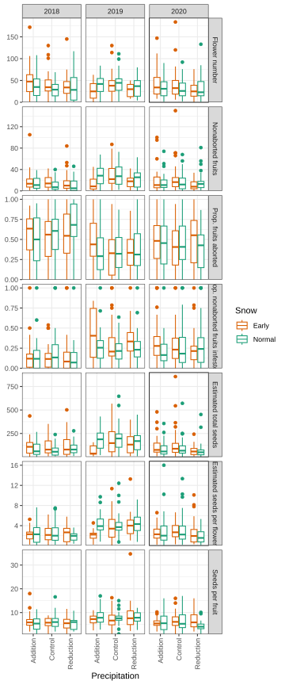
sds %>% pivot_longer(all_of(seedtraits), names_to = "trait") %>%
ggplot(aes(y=value, x=VWC, color=year)) +
facet_grid(trait~year, scales="free_y", labeller=as_labeller(c(set_names(2018:2020), traitnames))) +
geom_point(size=0.5) + geom_smooth(se=F) + scale_color_manual(values=year_pal) +
labs(x="Summer mean of soil moisture in subplot (VWC)", color="Year") +
theme_bw() + theme(axis.title.y=element_blank()) + guides(year="none")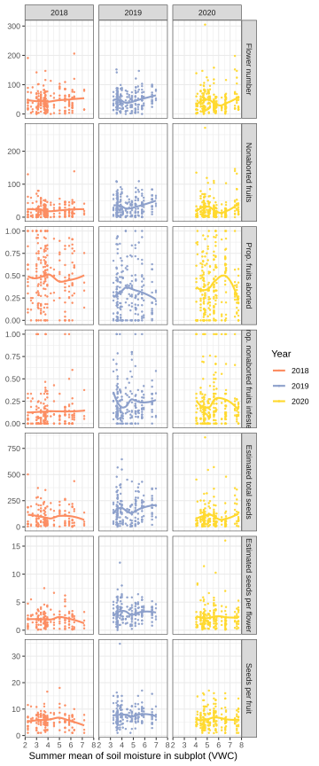
mnps.plantyr %>% pivot_longer(all_of(fitnesstraits), names_to = "trait") %>%
ggplot(aes(y=value, x=water, color=snow)) +
facet_grid(trait~year, scales="free_y", labeller=as_labeller(c(set_names(2018:2020), fitnessnames))) +
geom_boxplot() + scale_color_manual(values=snow_pal) + scale_y_continuous(expand=expansion(mult=c(0,0.05)))+
labs(x="Precipitation", color="Snow") +
theme_bw() + theme(axis.title.y=element_blank()) + guides(x=guide_axis(angle = 90))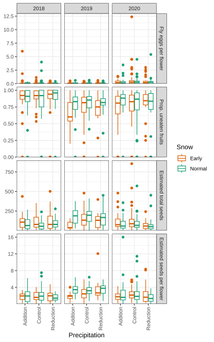
mnps.plantyr %>% pivot_longer(all_of(fitnesstraits), names_to = "trait") %>%
ggplot(aes(y=value, x=VWC, color=year)) +
facet_grid(trait~year, scales="free_y", labeller=as_labeller(c(set_names(2018:2020), fitnessnames))) +
geom_point(size=0.5) + geom_smooth(se=F) + scale_color_manual(values=year_pal) +
labs(x="Summer mean of soil moisture in subplot (VWC)", color="Year") +
theme_bw() + theme(axis.title.y=element_blank()) + guides(year="none")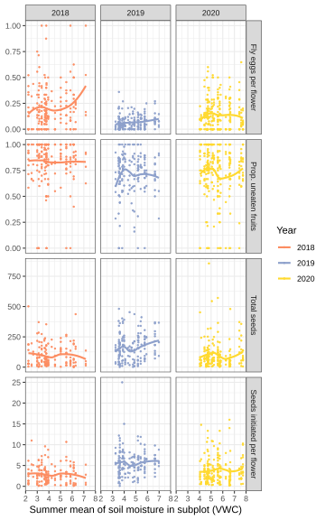
# seeds.mod.sm <- lmer(seeds_rel ~ VWC * year + (1|plotid),
# data=mnps.plantyr %>% group_by(year) %>% mutate(seeds_rel = seeds_est/mean(seeds_est, na.rm=T)))
# anova(seeds.mod.sm, ddf="Ken") %>% kable()
# emtrends(seeds.mod.sm, ~year, var="VWC") %>% kable()mnps.plantyr %>% select(all_of(fitnesstraits)) %>%
ggpairs(mapping=aes(color=mnps.plantyr$year), lower=list(continuous="smooth_loess")) +
scale_color_manual(values=year_pal)+ scale_fill_manual(values=year_pal)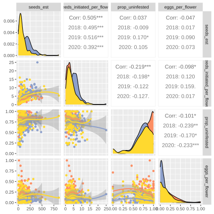
ggplot(sds %>% drop_na(plot), aes(color=water, x=fruits, y=seeds)) + geom_point() + geom_smooth(se=F) +
scale_color_manual(values=water_pal) + facet_wrap(vars(year), nrow=1) + theme_minimal() +
labs(x="Counted fruits", y="Counted seeds", color="Precipitation")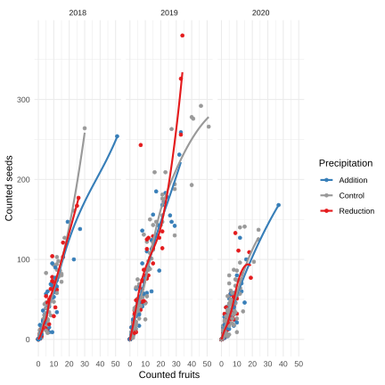
mt %>% select(corolla_length, corolla_width, style_length, anther_max, anther_min, sepal_width) %>%
ggpairs()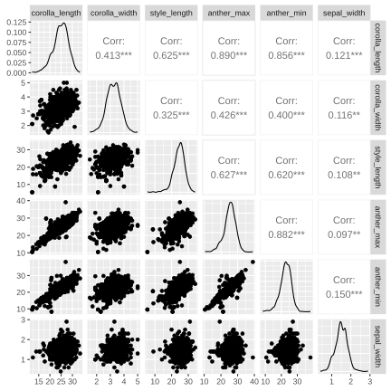
nt %>% select(nectar_24_h_ul, nectar_conc, nectar_sugar_24_h_mg) %>%
ggpairs()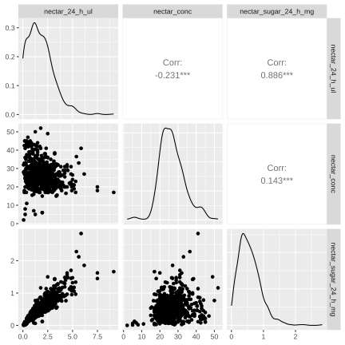
ggplot(nt, aes(x=nectar_24_h_ul, y = nectar_conc)) + geom_point() + labs(y=traitnames[["nectar_conc"]], x=traitnames[["nectar_24_h_ul"]]) + geom_smooth(se=F)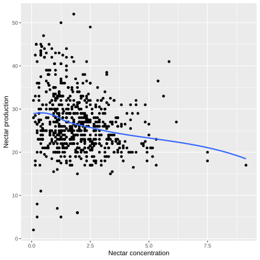
mnps.plantyr %>% select(corolla_length, corolla_width, style_length, anther_max, anther_min, sepal_width, nectar_24_h_ul, nectar_conc, nectar_sugar_24_h_mg, height_cm, flowers_est) %>%
ggcorr(hjust=0.85, layout.exp=2, label=T, label_round=2)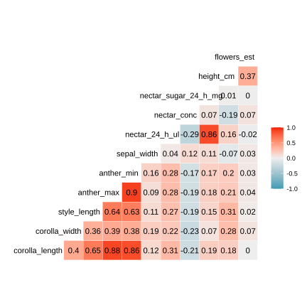
mnps.plantyr %>% select(all_of(seedtraits[c(1,7,2:6)])) %>%
ggcorr(hjust=0.85, layout.exp=2, label=T, label_round=2)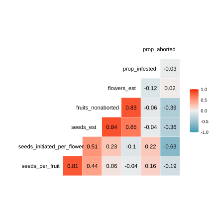
walk(fitnesstraits, ~
print(mnps.plantyr %>%
mutate(prop_uninfested = if_else(fruits_nonaborted > 4, prop_uninfested, NA)) %>%
pivot_longer(all_of(floraltraits)) %>%
ggplot(aes_string(y=.x, x="value", color="year")) +
geom_point(size=0.5) + geom_smooth(method="lm", se=F) +
facet_wrap(vars(name), scales="free_x", labeller=as_labeller(traitnames), nrow=2) +
labs(y=fitnessnames[.x], color="Year")+
theme_bw() + scale_color_manual(values=year_pal) + theme(axis.title.x=element_blank()))) 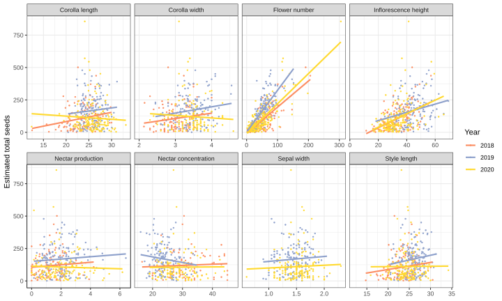
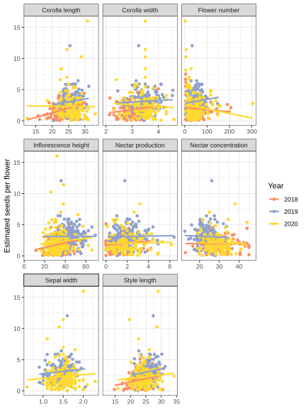
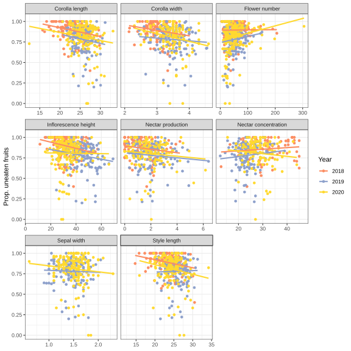
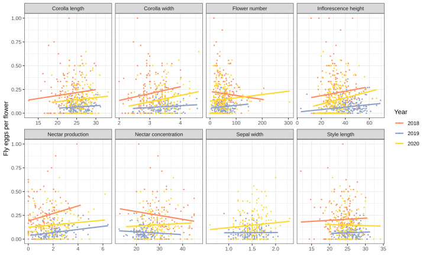
walk(fitnesstraits, ~
print(mnps.plantyr %>%
mutate(prop_uninfested = if_else(fruits_nonaborted > 4, prop_uninfested, NA)) %>%
pivot_longer(all_of(floraltraits)) %>%
ggplot(aes(x=value, color=paste(water,snow))) + #shape=year, linetype=year,
geom_point(aes_string(y=.x), size=0.5) + geom_smooth(aes_string(y=.x), method="lm",se=F) +
facet_wrap(vars(name), scales="free_x", labeller=as_labeller(traitnames), nrow=2) +
labs(y=fitnessnames[.x],
color="Precipitation and snowmelt", linetype="Year", shape="Year")+
theme_bw() + scale_color_manual(values=water_snow_pal) +
theme(axis.title.x=element_blank())))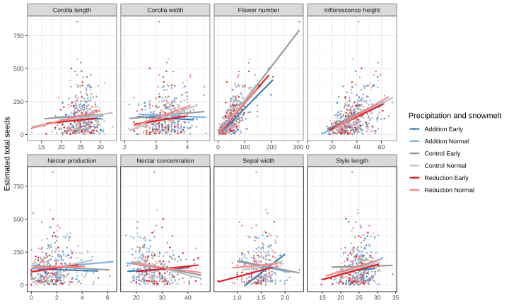
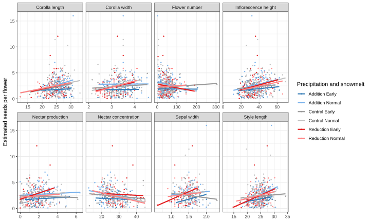
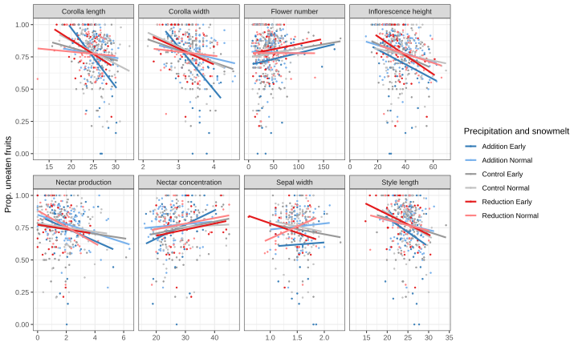
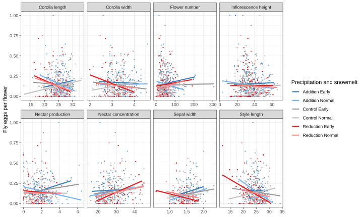
mt.mod.indiv <- expand_grid(trait=floraltraits, fitnesstrait=fitnesstraits, yr=2018:2020) %>%
filter(!(yr==2018 & trait=="sepal_width")) %>%
mutate(model = pmap(., function(trait, fitnesstrait, yr) {
lm(relfitness ~ trait.z,
data=mnps.plantyr %>% mutate(trait.z = mnps.plantyr[[trait]] / alltraits.sd[[trait]]) %>%
rename("fitness" = fitnesstrait) %>%
filter(year==yr) %>% mutate(relfitness = fitness/mean(fitness, na.rm=T)))}), # mean fitness in each yr
coef = map(model, tidy))
#test = map(model, ~tidy(car::Anova(.x), type=3)),
#emm = map(model, ~summary(emtrends(.x, ~1, var="trait.z"))))
#get the the standardized selection differential S' (change in relative fitness / standardized trait value)
mt.mod.indiv %>% select(trait, fitnesstrait, yr, coef) %>% unnest(coef) %>% filter(term=="trait.z") %>%
ggplot(aes(x=traitnames[trait], color=factor(yr), y=estimate, ymin=estimate-std.error, ymax=estimate+std.error)) +
facet_wrap(vars(fitnesstrait), labeller = as_labeller(fitnessnames)) +
geom_hline(yintercept=0) + geom_pointrange() + coord_flip() + scale_color_manual(values=year_pal) +
labs(y="Standardized selection differential S'", color="Year") + theme_bw() + theme(axis.title.y=element_blank())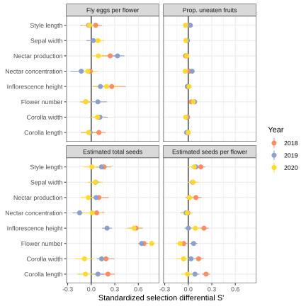
selection_mod_abs <- function(trait, response) {
mnps.abs <- mnps.plantyr %>%
select(all_of(c(response, trait)), sun_date, precip_est_mm) %>%
rename("trait" = all_of(trait), "response" = all_of(response)) %>%
filter(!is.infinite(response), !is.nan(response), !is.na(response)) %>%
mutate(response = response/mean(response, na.rm=T), #relative fitness
trait = (trait-mean(trait, na.rm=T))/sd(trait, na.rm=T)) #center and scale
options(contrasts = c("contr.sum", "contr.poly"))
lm(response ~ trait * sun_date + trait * precip_est_mm, data = mnps.abs)
}
mod.selection.abs <- expand.grid(list(response = fitnesstraits, trait = floraltraits)) %>%
mutate(model = pmap(., selection_mod_abs),
coefs = map(model, tidy))
mod.selection.tests <- mod.selection.abs %>%
mutate(tests = map(model, ~ tidy(car::Anova(.x, type=3)))) %>%
select(-model) %>% unnest(coefs) %>%
filter(str_detect(term, "trait"))mod.selection.abs %>% select(-model) %>% unnest(coefs) %>%
ggplot(aes(x=fitnessnames[response], y=estimate)) + facet_wrap(vars(term), scales="free_y") +
geom_hline(yintercept=0) + geom_point() + scale_x_discrete("", guide = guide_axis(angle=90))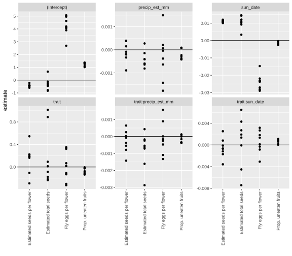
ggplot(mod.selection.tests, aes(x=factor(response, levels=sort(fitnesstraits)), y=estimate, label=trait)) +
facet_wrap(vars(term), labeller = as_labeller(c(trait="A. Selection on trait (\U03B2)",
`trait:precip_est_mm`=
"B. Selection on trait x summer precipitation (\U03B2 / mm)",
`trait:sun_date`=
"C. Selection on trait x snowmelt date (\U03B2 / day)")),
scales="free_y", ncol=1) + theme_bw() +
geom_point(color="grey90") + geom_hline(yintercept=0) +
geom_text(data = mod.selection.tests %>% mutate(trait=recode(trait, !!!traitnames)),
aes(alpha = p.value < 0.05), size=3.5, show.legend = F)+
scale_x_discrete(labels=fitnessnames) + labs(x="Fitness measure") + theme(axis.title.y=element_blank())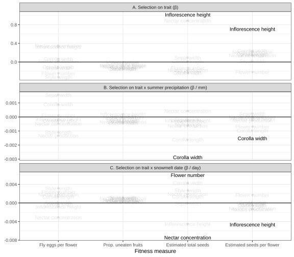
Following method of Chong et al. 2018 for reconstructing selection estimates from estimates of selection on PCs: Beta = E * A.
mt.morph <- mt[,c("corolla_length", "corolla_width","style_length","anther_max","anther_min","year","VWC")] %>% drop_na(1:5) #drop sepal_width
mt.pca <- prcomp(mt.morph[,-(6:7)], scale.=TRUE)
mt.morph.pca <- mt.morph %>%
bind_cols(as.data.frame(mt.pca$x)) %>%
tibble::rowid_to_column("index") %>%
mutate(x_0=0,y_0=0,
x_1=-corolla_width/2,y_1=corolla_length,
x_2= corolla_width/2,y_2=corolla_length) %>%
pivot_longer(c(starts_with("x"),starts_with("y")), names_to=c(".value", "point"), names_sep="_")
scl <- 100
zoom <- 5.5
mt.pca.vars <- as.data.frame(mt.pca$rotation) %>% rownames_to_column("variable")
mt.pca.labs <- paste0("PC", 1:2, " (", round(100*mt.pca$sdev[1:2]^2/sum(mt.pca$sdev^2), 0), "% explained var.)")
ggplot(mt.morph.pca) + theme_classic() +
geom_polygon(aes(x= x/scl+PC1, y= y/scl+PC2, group=index, color=VWC, fill=VWC)) +
#geom_point(aes(x=PC1, y=PC2, size=sepal_width/2), color="darkgreen") +
geom_point(aes(x=PC1, y=PC2 + anther_min/scl), color="yellow", size=0.3) +
geom_point(aes(x=PC1, y=PC2 + anther_max/scl), color="yellow", size=0.3) +
geom_point(aes(x=PC1, y=PC2 + style_length/scl), color="grey60", size=0.5, shape=4) +
geom_segment(data=mt.pca.vars,aes(x=0, y=0, xend=PC1*zoom, yend=PC2*zoom),
arrow = arrow(length = unit(1/2, "picas")), color="black") +
geom_text(data =mt.pca.vars, aes(label = gsub("_"," ",variable), x = PC1*zoom*1.4, y = PC2*zoom*1.4,
angle = (180/pi) * atan(PC2/PC1), hjust = 0), color="black")+
scale_size_identity() + coord_fixed() +
scale_fill_viridis_c(direction=-1, option="plasma") + scale_color_viridis_c(direction=-1, option="plasma") +
labs(x=mt.pca.labs[1], y=mt.pca.labs[2])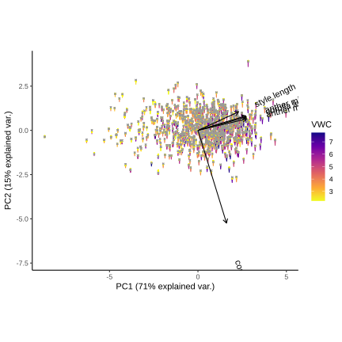
ggsave("images_selection/mt_morph_pca_noSW.svg", height=15, width=20)
zoom<-2
ggplot(mt.morph.pca) + geom_point(aes(x=PC1, y=PC2, color=corolla_width/corolla_length)) +
geom_segment(data=mt.pca.vars,aes(x=0, y=0, xend=PC1*zoom, yend=PC2*zoom),
arrow = arrow(length = unit(1/2, "picas")), color="white") +
geom_text(data =mt.pca.vars, aes(label = gsub("_"," ",variable), x = PC1*zoom*1.1, y = PC2*zoom*1.1,
angle = (180/pi) * atan(PC2/PC1), hjust = 0), color="white")+
scale_color_viridis_c(option = "plasma")+ theme_dark()+
theme(panel.grid=element_blank()) + labs(color="width/length") #+ coord_fixed()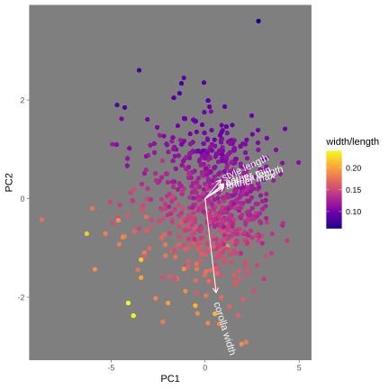
morphtraits.pca <- morphtraits[-6] #remove sepal_width (not measured in 2018)
#Standardize traits by mean and fitness by mean within each year
mnps.plantyr.std <- mnps.plantyr %>% select(all_of(morphtraits.pca),all_of(fitnesstraits), any_of(names(treatments))) %>%
mutate(across(all_of(morphtraits.pca), ~ (.x-mean(.x, na.rm=T))/sd(.x, na.rm=T))) %>%
drop_na(all_of(morphtraits.pca))
# Run PCA on traits
mnps.PCA <- mnps.plantyr.std %>% select(all_of(morphtraits.pca)) %>% prcomp() #TODO check if these need to be scaled (scale. arg)
summary(mnps.PCA) # PCs 1 - 4 explain ~90% of the variationImportance of components:
PC1 PC2 PC3 PC4 PC5 PC6 PC7
Standard deviation 1.741 1.040 0.889 0.7728 0.6552 0.3433 0.3119
Proportion of Variance 0.493 0.176 0.129 0.0972 0.0699 0.0192 0.0158
Cumulative Proportion 0.493 0.669 0.798 0.8951 0.9650 0.9842 1.0000mnps.PCA.E <- mnps.PCA$rotation[,1:4]
mnps.plantyr.std.PCA <- bind_cols(mnps.plantyr.std, as.data.frame(mnps.PCA$x))
calculate_beta <- function(E, slopes, resid.df) {
data.frame(B = E %*% slopes$A,
SE = sqrt(E ^ 2 %*% slopes$SE ^ 2)) %>%
mutate(p.value = 2*pt(abs(B)/SE, df=resid.df, lower.tail=F)) %>% #calculate t statistic from difference in means and SE, then look up one-tailed p in the upper tail, double to get a 2-tailed test
rownames_to_column("trait")
}
selection_pca <- function(year, water=names(water_pal), snow=names(snow_pal), fitnesstrait = "seeds_est") {
mnps.std.PCA <- mnps.plantyr.std.PCA %>%
filter(year == .env$year, water %in% .env$water, snow %in% .env$snow) %>%
select(all_of(fitnesstrait), any_of(names(treatments)), starts_with("PC")) %>%
rename("fitness" = fitnesstrait) %>%
group_by(year) %>% mutate(relfitness = fitness/mean(fitness, na.rm=T), .keep="unused") %>% ungroup %>%
drop_na(relfitness) %>%
select(where(~sum(is.na(.))==0))
# Regress relative fitness on PCs
mnps.PCA.regression <- lm(relfitness ~ PC1 + PC2 + PC3 + PC4, data = mnps.std.PCA)
mnps.PCA.slopes <- tidy(mnps.PCA.regression) %>% filter(term != "(Intercept)") %>% rename(A=estimate, SE=std.error)
# Convert selection gradients on PCs to gradients on traits
calculate_beta(mnps.PCA.E, mnps.PCA.slopes, aov(mnps.PCA.regression)$df.residual)
}
plot_beta <- function(betas, colorby="year") {
bs <- betas
if(colorby=="water_snow") bs <- bs %>% mutate(water_snow = paste(water, snow))
ggplot(bs, aes(y=morphnames[trait], x = B, xmin=B-SE, xmax=B+SE,alpha=p.value<0.05)) +
geom_vline(xintercept=0)+
geom_pointrange(mapping=aes_string(color=colorby), position=position_dodge(width=0.5)) +
labs(x = "Selection gradient \U03B2 estimated from gradients on PCs", y = "Trait",
color=list(year="Year", water="Precipitation", snow="Snowmelt",
water_snow = "Precipitation and snowmelt")[[colorby]]) +
scale_color_manual(values=list(year=year_pal, water=water_pal, snow=snow_pal,
water_snow=water_snow_pal)[[colorby]]) +
theme_bw()
}
mnps.beta.yr <- expand_grid(year=unique(mnps.plantyr$year), fitnesstrait=fitnesstraits) %>%
mutate(betas = pmap(., selection_pca)) %>% unnest(betas)
plot_beta(mnps.beta.yr)+ facet_wrap(vars(fitnesstrait), nrow=1, labeller=as_labeller(fitnessnames))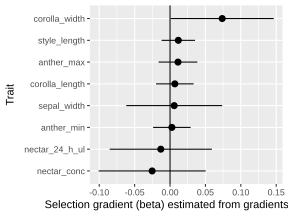
mnps.beta.water <- expand_grid(year=unique(mnps.plantyr$year), water=names(water_pal), fitnesstrait=fitnesstraits) %>%
mutate(betas = pmap(., selection_pca)) %>% unnest(betas)
mnps.beta.snow <- expand_grid(year=unique(mnps.plantyr$year), snow=names(snow_pal), fitnesstrait=fitnesstraits) %>%
mutate(betas = pmap(., selection_pca)) %>% unnest(betas)
mnps.beta.water.snow <- expand_grid(year=unique(mnps.plantyr$year), water=names(water_pal), snow=names(snow_pal), fitnesstrait=fitnesstraits) %>%
mutate(betas = pmap(., selection_pca)) %>% unnest(betas)
walk(fitnesstraits, ~print(plot_beta(filter(mnps.beta.water.snow, fitnesstrait==.x), colorby="water_snow") +
facet_wrap(vars(year), nrow=1) + ggtitle(fitnessnames[.x])))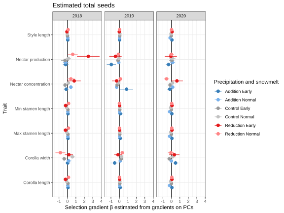
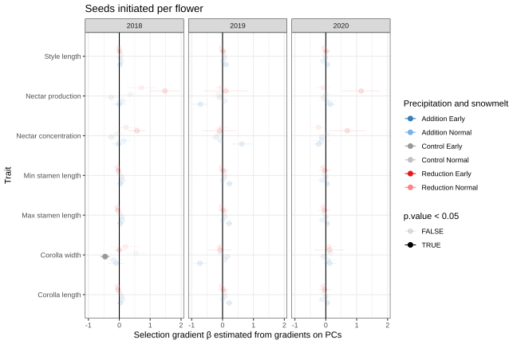
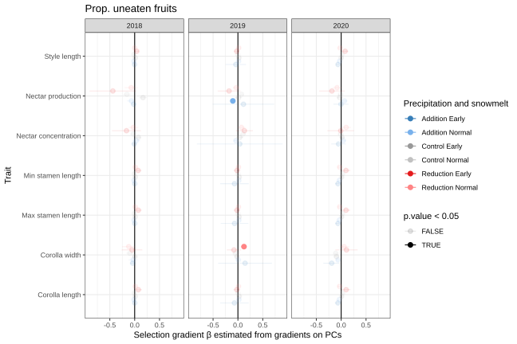
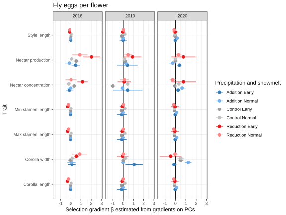
adaptive.plasticity.data <- mnps.plantyr %>% pivot_longer(all_of(morphtraits)) %>% drop_na(value) %>% group_by(name, year) %>% nest() %>%
mutate(model = map(data, ~lm(value ~ snow + water, data=.)), # + (1|plotid) + (1|snow:plot)
emm = map(model, ~ summary(emmeans(.x, ~ snow + water))%>% filter(water=="Control", snow=="Normal")),
test = map(model, ~tidy(multcomp:::summary.glht(multcomp::glht(.x,
linfct = multcomp::mcp(water = c("Addition - Control = 0",
"Reduction - Control = 0",
"Reduction - Addition = 0"),
snow = c("Early - Normal = 0"))), multcomp::adjusted(type="none"))))) %>%#adjust later
select(year, name, emm, test) %>% unnest(c(emm, test)) %>%
mutate(estimate=estimate/emmean, std.error=std.error/emmean, #divide estimated difference in means by emm in Normal Control subplots
contrast = str_replace(str_remove_all(contrast, "[a-z\\s]"),"-","_"),
newenv = recode(contrast, "A_C"="Addition", "R_C"="Reduction","E_N"="Early"),
multiplecomps = contrast %in% c("A_C","R_C")) %>% #these two reuse the same control data
group_by(multiplecomps, name, year) %>% #two comparisons to Control made within each volatile and year
mutate(adj.p.value = ifelse(multiplecomps, p.adjust(p.value, method="fdr"), p.value)) %>%
ungroup %>%
select(year, name, newenv, adj.p.value, estimate, std.error) %>%
left_join(bind_rows(rename(mnps.beta.water, newenv=water),
rename(mnps.beta.snow, newenv=snow)) %>%
filter(fitnesstrait!="eggs_per_flower") %>% rename(name=trait)) %>%
drop_na(fitnesstrait) #TODO investigate NAs in fitnesstrait - why not computed in mnps.beta.water for some sepal_widths?
envnames <- c(Addition="additional precipitation",
Reduction="reduced precipitation",
Early="early snowmelt")
library(ggpubr)
adaptive.plasticity.data %>% filter(newenv!="R_A") %>%
mutate(fitnesstrait=factor(fitnesstrait, levels = rev(fitnesstraits))) %>%
group_by(newenv) %>% nest() %>%
pwalk(function(newenv, data) {
print(ggplot(data, aes(x=estimate, y=B, color=morphnames[name])) +
labs(x=paste("Trait change with",envnames[newenv]),
y=paste("Selection gradient \U03B2 under",envnames[newenv]), color="Trait") +
facet_grid(rows=vars(year), cols=vars(fitnesstrait), scales="fixed",
labeller=as_labeller(c(fitnessnames, set_names(levels(treatments$year)))))+
geom_vline(xintercept=0) + geom_hline(yintercept=0) +
annotate("rect", xmin = 0, xmax = Inf, ymin = 0, ymax = -Inf, fill= "black", alpha=0.1) +
annotate("rect", xmin = 0, xmax = -Inf, ymin = Inf, ymax = 0, fill= "black", alpha=0.1) +
geom_errorbar(aes(ymin=B-SE, ymax=B+SE)) +
geom_errorbarh(aes(xmin=estimate-std.error, xmax=estimate+std.error)) +
geom_point(size=2) +
scale_color_brewer(palette = "Dark2")+
scale_x_continuous(labels=scales::percent, limits=c(NA,NA), breaks=c(-4:4)/4) +
theme_bw() + theme(axis.text = element_text(size=7)))})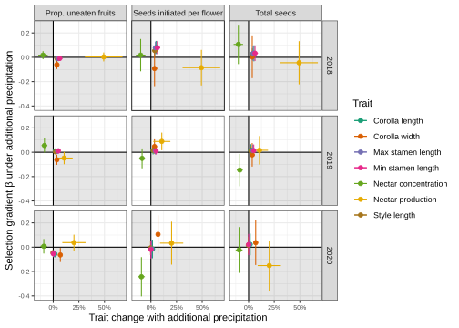
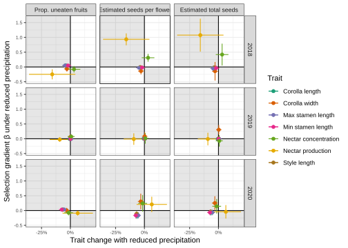
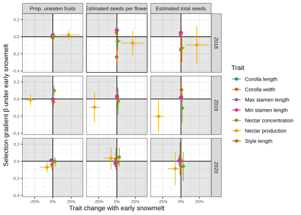
ggplot(adaptive.plasticity.data %>% filter(newenv!="R_A") %>% drop_na(fitnesstrait),
aes(x=estimate, xmin=estimate-std.error, xmax=estimate+std.error, y=morphnames[name], color=year, alpha=adj.p.value < 0.05)) +
facet_wrap(vars(newenv)) +
geom_vline(xintercept = 0) + geom_pointrange() + scale_color_manual(values=year_pal) +
theme_bw() + theme(panel.grid.major.y=element_blank(), axis.title.y=element_blank()) +
labs(x="Plastic change in new environment compared to control", color="Year")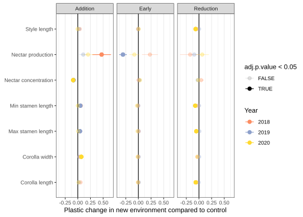
#from /MyDocs/MEGA/Documents/RMBL 2013/Project/Data/flrtraits_master3_2013.xls
#TODO get raw weather data from RMBLWeatherData_2010.xls (1975-2010)
pg <- read_csv("data/PG_flrtraits_2013.csv") %>%
mutate(type2 = case_match(type, c("AA","agg")~"agg", "TT"~"ten", .default="hyb"))
floraltraits.pg <- c(floraltraits[c(1,2,3,5,8)], "redness")
traitnames.pg <- c(traitnames, redness="Redness")
alltraits.sd.pg <- map_dbl(floraltraits.pg, ~sd(pg[[.x]], na.rm=T)) %>% set_names(floraltraits.pg)
#TODO 2005 and 2010 have less than 10 plants!
pg %>% count(year,type2) %>% pivot_wider(names_from=type2, values_from=n, values_fill = 0) %>%
mutate(n = agg+hyb+ten) %>% kable(caption = "number of plants of each species")| year | agg | hyb | ten | n |
|---|---|---|---|---|
| 2001 | 17 | 52 | 7 | 76 |
| 2002 | 11 | 37 | 4 | 52 |
| 2003 | 2 | 9 | 1 | 12 |
| 2004 | 2 | 13 | 3 | 18 |
| 2005 | 2 | 5 | 2 | 9 |
| 2006 | 1 | 11 | 4 | 16 |
| 2010 | 2 | 4 | 0 | 6 |
| 2011 | 5 | 27 | 2 | 34 |
| 2012 | 5 | 27 | 1 | 33 |
| 2013 | 12 | 11 | 0 | 23 |
pg %>% pivot_longer(all_of(c(floraltraits.pg, "seeds_est"))) %>%
ggplot(aes(y=value, x=meltday, color=type2)) +
facet_wrap(vars(name), scales="free_y", labeller=as_labeller(traitnames.pg), nrow=2) +
geom_point() + geom_smooth(method="lm", se=F) +
theme_bw() + theme(axis.title.y=element_blank())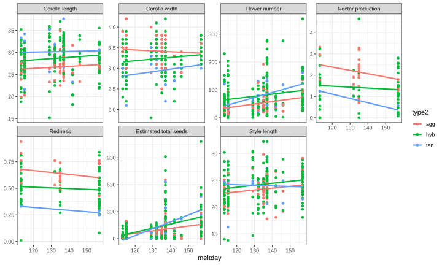
pg %>% pivot_longer(all_of(floraltraits.pg)) %>%
ggplot(aes(y=seeds_est, x=value, color=factor(year))) +
geom_point(size=0.5) + geom_smooth(method="lm", se=F) +
facet_wrap(vars(name), scales="free_x", labeller=as_labeller(traitnames.pg), nrow=2) +
labs(y=fitnessnames["seeds_est"], color="Year")+
theme_bw() + theme(axis.title.x=element_blank())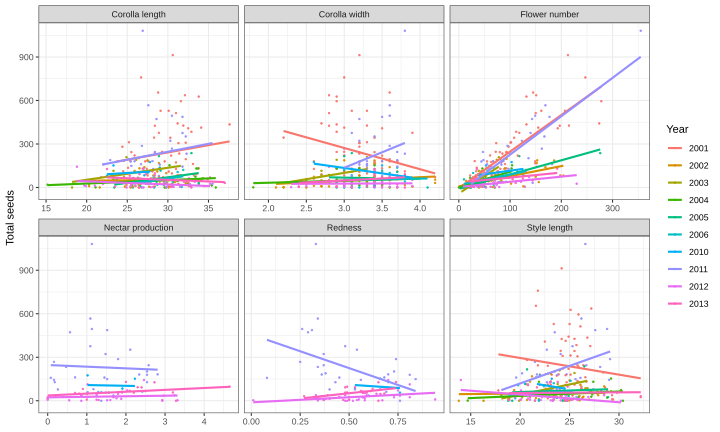
pg.climate <- pg %>% distinct(year, snowfall, octmay, junjul, meltday)
with(pg.climate, octmay - snowfall) #almost the same - units? maybe mm water? [1] 38 17 22 23 13 55 17 31 33 8ggplot(pg.climate, aes(x=snowfall, y=meltday)) + geom_point() + geom_smooth(method="lm")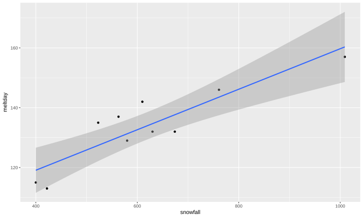
mt.mod.indiv.pg <- pg %>% pivot_longer(all_of(floraltraits.pg), names_to="trait") %>%
drop_na(value) %>% distinct(trait, yr=year) %>%
mutate(fitnesstrait="seeds_est") %>%
mutate(model = pmap(., function(trait, fitnesstrait, yr) {
lm(relfitness ~ trait.z,
data=pg %>% mutate(trait.z = pg[[trait]] / alltraits.sd.pg[[trait]]) %>%
rename("fitness" = fitnesstrait) %>%
filter(year==yr) %>% mutate(relfitness = fitness/mean(fitness, na.rm=T)))}), # mean fitness in each yr
coef = map(model, tidy))
#test = map(model, ~tidy(car::Anova(.x), type=3)),
#emm = map(model, ~summary(emtrends(.x, ~1, var="trait.z"))))
#get the the standardized selection differential S' (change in relative fitness / standardized trait value)
mt.mod.indiv.slopes.pg <- mt.mod.indiv.pg %>% select(trait, fitnesstrait, year=yr, coef) %>%
unnest(coef) %>% filter(term=="trait.z") %>% left_join(pg.climate)
ggplot(mt.mod.indiv.slopes.pg, aes(x=traitnames.pg[trait], color=factor(year), y=estimate, ymin=estimate-std.error, ymax=estimate+std.error)) +
facet_wrap(vars(fitnesstrait), labeller = as_labeller(fitnessnames)) +
geom_hline(yintercept=0) + geom_pointrange() + coord_flip() +
labs(y="Standardized selection differential S'", color="Year") +
theme_bw() + theme(axis.title.y=element_blank())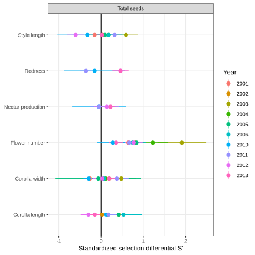
#TODO the corolla length plot doesn't quite match Fig 3B in Campbell & Powers 2015
ggplot(mt.mod.indiv.slopes.pg , aes(x=meltday, y=estimate, ymin=estimate-std.error, ymax=estimate+std.error)) +
facet_wrap(vars(trait), labeller = as_labeller(traitnames.pg)) +
geom_smooth(method="lm", color="grey70", alpha=0.1) +
geom_hline(yintercept=0) + geom_linerange(color="grey70") + geom_text(aes(label=str_sub(year,3,4))) +
labs(y="Standardized selection differential S'", x="Snowmelt date") + theme_bw()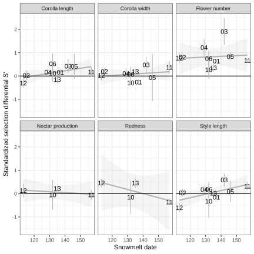
mt.mod.indiv.slopes.pg %>% group_by(trait) %>% nest() %>%
mutate(model = map(data, ~lm(estimate ~ meltday, data=.)),
test = map(model, ~tidy(anova(.)))) %>%
select(-data, -model) %>% unnest(test) %>% filter(term=="meltday") %>% kable(caption="selection differential vs. meltdate")| trait | term | df | sumsq | meansq | statistic | p.value |
|---|---|---|---|---|---|---|
| corolla_length | meltday | 1 | 0.178 | 0.178 | 3.400 | 0.102 |
| style_length | meltday | 1 | 0.370 | 0.370 | 4.654 | 0.063 |
| corolla_width | meltday | 1 | 0.029 | 0.029 | 0.452 | 0.521 |
| flowers_est | meltday | 1 | 0.016 | 0.016 | 0.066 | 0.804 |
| nectar_24_h_ul | meltday | 1 | 0.014 | 0.014 | 0.677 | 0.497 |
| redness | meltday | 1 | 0.303 | 0.303 | 2.680 | 0.243 |
datasetnames <- c(max="Maxfield Meadow", pg="Poverty Gulch")
max.pg.std <- bind_rows(.id="dataset", pg=filter(pg, type2!="ten"),
max=mutate(mnps.plantyr, site="max", year=as.numeric(year), meltday=sun_date)) %>%
pivot_longer(any_of(c(floraltraits.pg, floraltraits))) %>%
select(dataset, year, site, plant, type, type2, seeds_est, meltday, name, value) %>%
group_by(site, year, name) %>% drop_na(value, seeds_est) %>%
mutate(relfitness = seeds_est/mean(seeds_est), #relative fitness in each year for the plants with that trait measured
stdtrait = (value-mean(value))/sd(value)) #mean-standardized trait
meltbins <- 4
ggplot(max.pg.std, aes(y=relfitness, x=stdtrait, color=cut(meltday,meltbins))) +
facet_grid(dataset ~ name, labeller = as_labeller(c(traitnames.pg, datasetnames))) +
geom_point(size=0.5) + geom_smooth(method="lm", se=F, linewidth=2) +
coord_cartesian(xlim=c(-3,3), ylim=c(0, 5))+#some outliers not shown
scale_color_brewer(palette="Oranges", direction=-1) + scale_y_continuous(expand=expansion(c(0,0.05)))+
labs(x="Mean-centered and SD-scaled trait", y="Relative fitness (total seeds)", color = "Snowmelt date") +
theme_dark() + theme(legend.position = "top")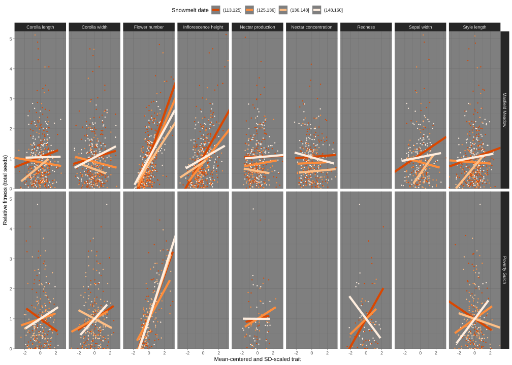
ggplot(max.pg.std, aes(x=meltday, fill=cut(meltday, meltbins))) + geom_histogram(binwidth=1)+
facet_wrap(vars(dataset), labeller = as_labeller(datasetnames)) +
scale_fill_brewer(palette="Oranges", direction=-1, guide="none") + theme_dark() +
labs(x="Snowmelt date", y="Number of observations")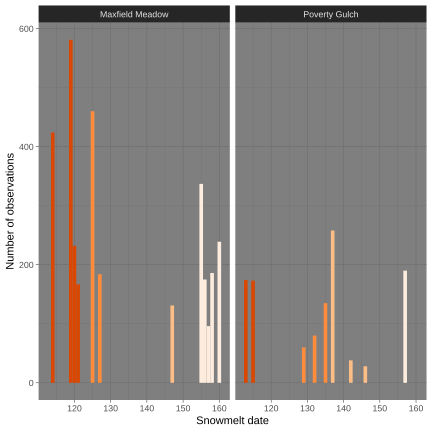
max.pg.std.mod <- max.pg.std %>% group_by(dataset, name) %>% nest() %>%
mutate(model = map(data, ~lm(relfitness ~ stdtrait * meltday, data=.)),
coef = map(model, ~tidy(.x))) %>%
select(-data, -model) %>% unnest(coef) %>% filter(term!="(Intercept)")
ggplot(max.pg.std.mod, aes(y=traitnames.pg[name], x=estimate, shape=p.value<0.05, color=datasetnames[dataset])) +
facet_wrap(vars(term), scales = "free_x") +
geom_vline(xintercept = 0)+ scale_shape_manual(values=c(1,19), guide="none")+
scale_color_brewer("", palette = "Set1")+
geom_pointrange(aes(xmin=estimate-std.error, xmax=estimate+std.error)) +
theme_bw() + theme(legend.position = "top", axis.title.y=element_blank()) 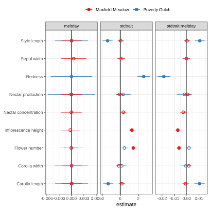